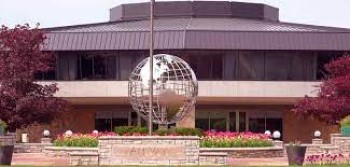

SENTIDO NATURAL (Amway)
HISTORIA

En 1959, Amway lanzó un modelo de negocios impulsado por el poder de las relaciones entre la gente. Nuestro primer producto, el Limpiador Orgánico Líquido o L.O.C.™, fue uno de los primeros productos de limpieza biodegradable, además de ser respetuoso con el medio ambiente. Sin embargo, nuestro compromiso con la excelencia continúa.
Amway es la compañía de venta directa más grande del mundo, con $8.400 millones de dólares en ventas reportadas en el año 2019*. Fabricamos y distribuimos productos de nutrición, belleza y cuidado del hogar, los cuales se venden exclusivamente en más de 100 países por medio de Empresarios Amway y tiendas Amway.
Linea de tiempo
| 1959 | 1961 | 1989 | 1999 | 2009 |
|---|---|---|---|---|
| Jay Van Andel y Rich DeVos fundan Amway. | Amway obtiene su primer patente | Recibe el Premio al Logro Ambiental del Programa de las Naciones Unidad para el ambiente. | Obtiene la certificacion organica para los cultivos usados en sus productos. | Amway cumple 50 años |